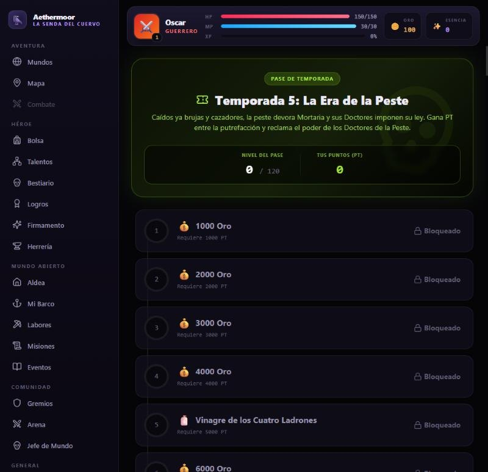
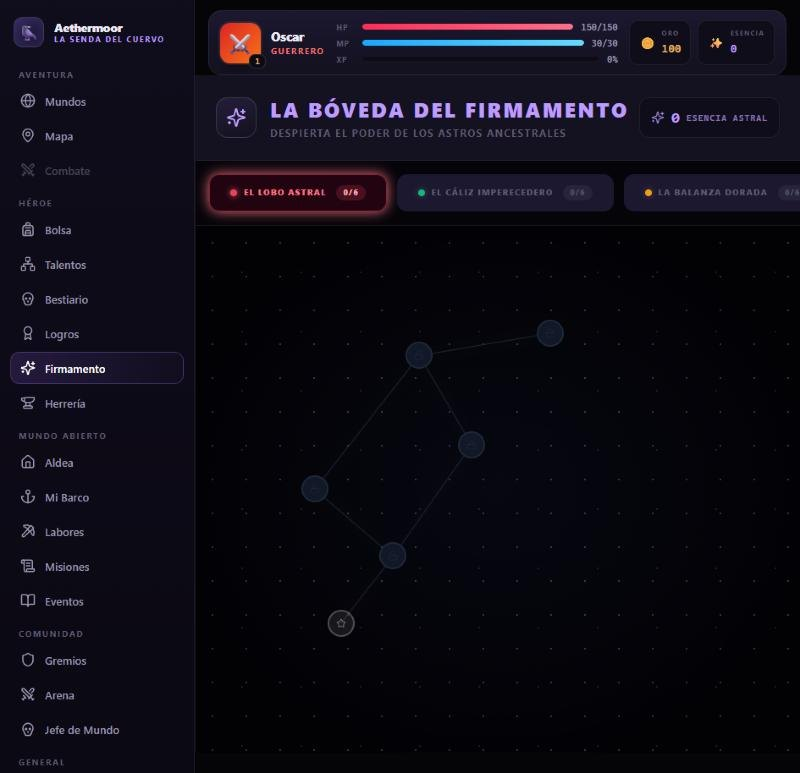
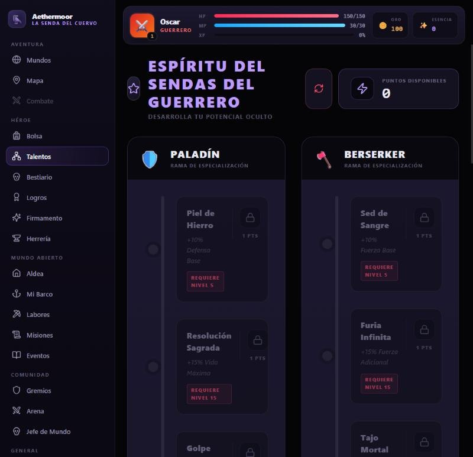
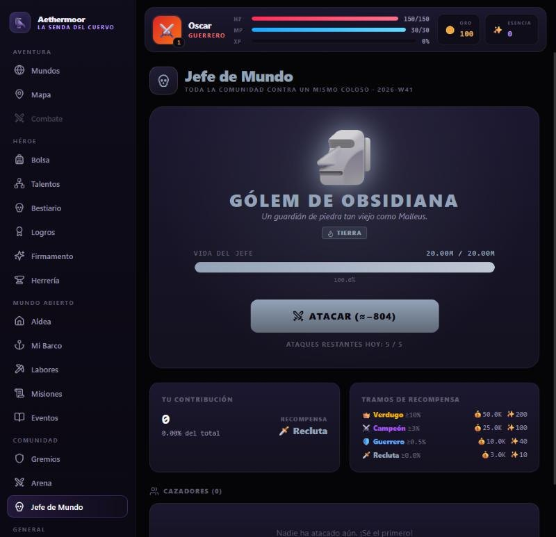
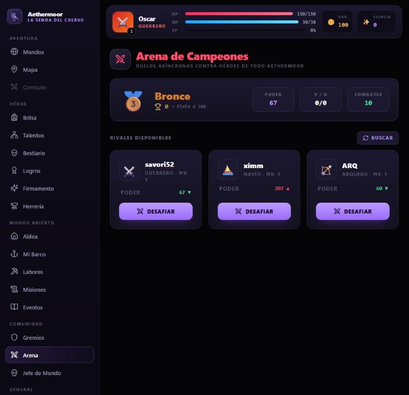
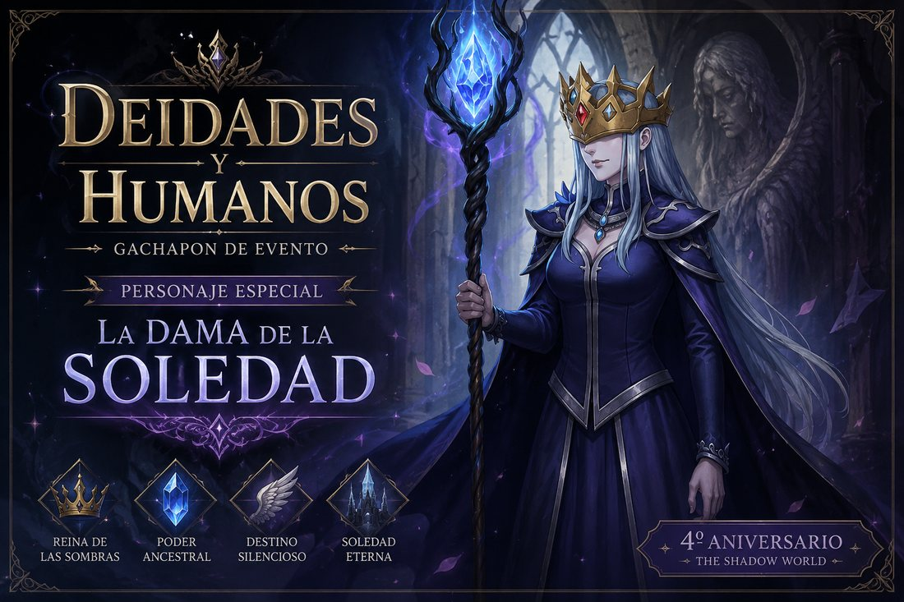
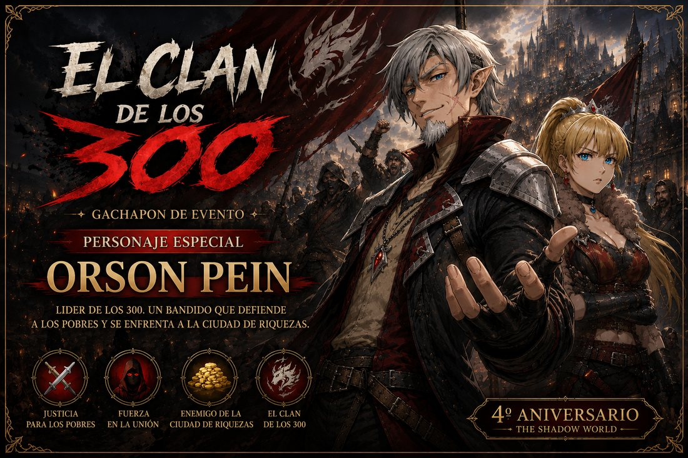
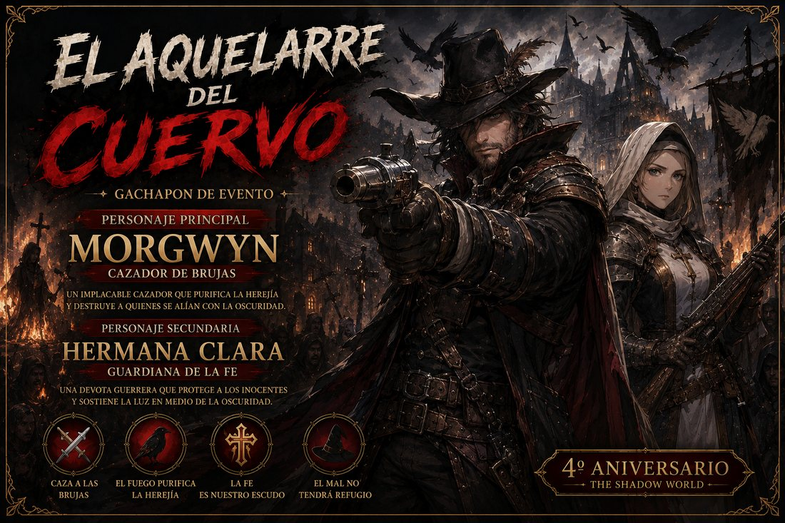
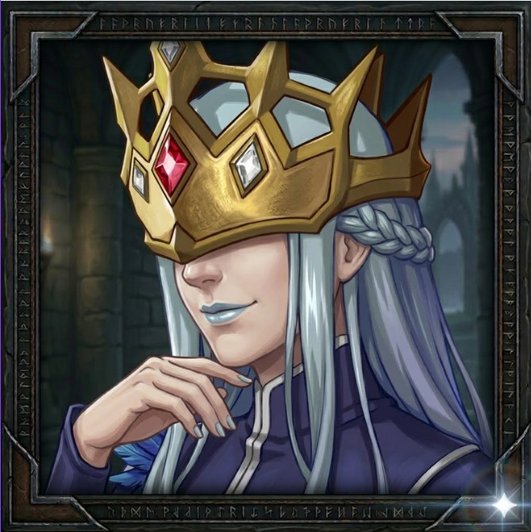

Caídos ya los clanes de brujas y cazadores, la peste devora las calles de
Mortaria, la Urbe Doliente, y los Doctores de la Peste imponen su ley entre la
putrefacción. Seis zonas, dieciocho misiones y un pase de 120 niveles con track de prestigio.
1
Las Calles EnsangrentadasSaqueadores, perros rabiosos y supervivientes enloquecidos.
2
El Barrio de los ApestadosPuertas marcadas con sangre y la Madre Apestada.
3
La Fosa ComúnSepultureros corruptos y el Amasijo de Cadáveres.
4
El LazaretoEnfermeras de la peste y el Doctor Sangrador.
5
El Osario de MortariaMiasmas vivientes y el Heraldo de la Pestilencia.
6
El Sanatorio del ArchiatraLa élite carmesí y el Gran Doctor de la Peste.
Al final espera el Archiatra, que pretende
purgar de raíz toda la vida de Aethermoor. Su bisturí es la recompensa.

El Pase de Temporada, dentro del juego
Descubre el Reino
Reinos de Aethermoor es un RPG idle de fantasía oscura: tu héroe combate, tu reino produce y tu
leyenda crece incluso cuando descansas. Explora diez mundos, doma el Firmamento, levanta tu Ciudadela… y
cuando toques techo, renace en el Trono de la Eternidad más poderoso que nunca.
10mundos
69criaturas
4clases
5temporadas
120niveles de pase
∞ascensiones
Diez mundos por conquistar
Cada reino tiene sus criaturas, su botín y su propio nivel de entrada. Del prado de
Eldoria al Sanatorio del Archiatra.
🗺️
Tierras de AethermoorEl mundo principal · hasta nivel 100
Nv 1
🌊
El Mar NegroDominio naval: krakens y galeones malditos
Nv 1
💀
Narak'ZulCampaña: un reino maldito tras el velo
Nv 20
🏴☠️
La Isla PirataLadrones, motines y tesoros malditos
Nv 30
🌃
La Ciudad OníricaCampaña: donde los sueños cobran vida
Nv 40
⚓
La Isla OscuraLos naufragios más terribles
Nv 40
🐦⬛
NóxalisTemporada 4 · el reino de las brujas
Nv 40
⚖️
MalleusTemporada 4 · la Inquisición y sus hogueras
Nv 60
🗼
La Torre InfinitaMazmorra infinita entre el cielo y el infierno
Nv 60
🦠
MortariaTemporada 5 · la Urbe Doliente
Nv 100
Elige tu clase
Cuatro caminos, cada uno con sus cuatro habilidades y sus dos ramas de talentos.
⚔️
Guerrero
Maestro del combate cuerpo a cuerpo. Alta resistencia y daño físico devastador.
Paladín · Berserker🔮
Mago
Domina las fuerzas arcanas. Devastador daño mágico a distancia.
Elementalista · Arcanista🏹
Arquero
Ágil y preciso. Ataques rápidos a distancia con daño crítico.
Tirador · Sombra✨
Sanador
Canaliza la luz sagrada. Puede curarse y hacer daño divino.
Luz · Castigo
Y además el Navío: tu barco tiene sus propias estadísticas para enfrentarse a los
horrores del Mar Negro.
Un reino que crece contigo

El Firmamento Despierta las constelaciones — el Lobo Astral, el Cáliz Imperecedero,
la Balanza Dorada — y deja que los astros multipliquen tu poder, tu oro y tu destino.

Talentos Dos ramas de especialización por clase. Reparte tus puntos, desbloquea
pasivas por nivel y haz que cada golpe crítico cuente. Tu build es tuya.

Jefe de Mundo Toda la comunidad contra un mismo coloso, cada semana. Cinco ataques
diarios, una barra de vida compartida y recompensas por tramos según lo que aportes.

Arena de Campeones Duelos asíncronos contra héroes de todo Aethermoor. Sube de
Bronce a Plata midiendo tu poder con el de otros jugadores reales.
Tu Ciudadela
Once edificios a tu mando: la Mina extrae oro cada segundo, el Cuartel entrena soldados, la
Biblioteca Arcana estudia magia… Tu reino produce incluso mientras no juegas.
Bestiario
Sesenta y nueve criaturas por descubrir. Cada enemigo derrotado revela su ficha y otorga
bonificaciones permanentes automáticas.
La Gran Fragua
Forja equipo nuevo y mejora el que llevas con fragmentos y oro. Lo que sueltan los jefes es solo el
principio.
Gremios
Reúne a tu clan bajo un mismo estandarte y coordinaos para los jefes de mundo y la clasificación.
Aldea, Labores y Barco
Atiende tu aldea, ejerce tus labores de recolección y zarpa con tu propio navío hacia el Mar Negro.
Pase y Clasificación
Ciento veinte niveles de pase con track de prestigio, misiones semanales y una clasificación con el
resto de héroes de Aethermoor.
El Trono de la Eternidad
«Sacrifica tu forma mortal para renacer con el conocimiento del universo.
Empezarás de cero, pero serás mucho más poderoso.»
La Ascensión es el corazón del juego: renuncia a tu oro, tu nivel y tu equipo a
cambio de Puntos de Prestigio y un multiplicador global permanente. Conservas el Pase de Temporada y
los Puntos de Prestigio. Cada renacer te acerca a la eternidad.
Gachapón de Tripulantes
Recluta aliados en la Tienda y asígnalos a tu barco para multiplicar tus estadísticas.
Cinco bandos te esperan.
Tripulación de Aethermoor
Bando permanente
Tripulación de Aethermoor
El bando de siempre: desde el Marinero Novato hasta el legendario
Darius, invencible en cubierta.
👴El AncianoLegendario
🧙♀️La ArchimagaLegendario
⚔️DariusLegendario
⚓Capitán de C. EsperanzaÉpico
5.000 oro x10 por 50.000 5% legendario
El Cortejo de la Peste
Temporada 5 · Mortaria
El Cortejo de la Peste
Los que sobreviven entre la putrefacción de Mortaria: brujas ocultas,
sepultureros incansables y doctores que desertaron del Archiatra.
🕯️Névena, la Bruja OcultaLegendario
🪦El SepultureroLegendario
⚰️Guadaña del Cortejo FúnebreLegendario
🎭Doctor EnmascaradoÉpico
50.000 oro x10 por 100.000 2% legendario

Evento · 4º Aniversario
Deidades y Humanos
Los señores de The Shadow World cruzan a Aethermoor: deidades,
guerreros de otra dimensión y reliquias del abismo.
👑La Dama de la SoledadLegendario
🌑El Rey SombraLegendario
⚔️NozharÉpico
🗡️Hoja de SombraÉpico
50.000 oro x10 por 100.000 2% legendario

Evento · 4º Aniversario
El Clan de los 300
La rebelión de los desfavorecidos contra la ciudad de riquezas.
Trescientos corazones que laten como uno.
🗡️Orson PeinLegendario
🥷La LadronaLegendario
🚩Estandarte de los 300Legendario
🛡️Clan de los 300Épico
50.000 oro x10 por 100.000 2% legendario

Mitad de Temporada 4
El Aquelarre del Cuervo
Brujas de Nóxalis y cazadores de Malleus, aliados a la fuerza contra
un mal mayor: el Devorador de Fe.
👑MorgwynLegendario
✝️Hermana ClaraLegendario
🪶Báculo del CuervoLegendario
🏹Gran CazadorÉpico
50.000 oro x10 por 100.000 2% legendario
Todas las tiradas se pagan con oro del juego. Los bandos de evento rotan: ¡recluta a sus
legendarios antes de que zarpen!

Personaje legendario
La Dama de la Soledad
Reina de las Sombras, poder ancestral, destino silencioso. Cruzó desde The Shadow World para
el 4º aniversario y se quedó entre los legendarios más codiciados de Aethermoor.
Empieza tu leyenda
Gratis, y tu progreso te sigue: juega en el navegador y continúa en el móvil o en el
PC con la misma cuenta.